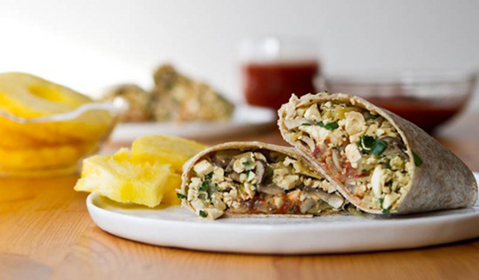
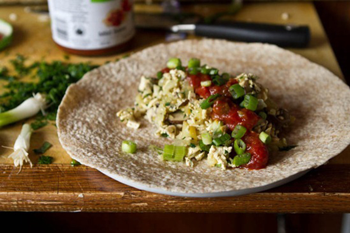

High protein vegan breakfast burrito

- Yield: Four 3/4 cup servings
- Prep time: 20 minutes
- Cook time: 20 minutes
This burrito is a great way to change up your normal breakfast routine. Best of all, it makes 4 servings so you can store the leftover scramble in the fridge and simply heat and go for a quick breakfast all week long.
Feel free to play around with the ingredients and seasonings depending on what you have in your fridge. Don’t like tofu? Try swapping it out for black beans or chickpeas!
INGREDIENTS
- 1 package extra-firm tofu, rinsed and pressed
- 1 tsp extra virgin olive oil
- 3 garlic cloves
- 2 cups diced sweet onion (about 1 medium)
- 1 cup diced potato (~115 grams or half a medium potato)
- 1.5 cups sliced crimini mushrooms (150 grams or about 9 mushrooms)
- 1/4 cup nutritional yeast
- 3-4 tbsp minced fresh basil
- 2 tbsp minced fresh parsley
- 1-1.5 tbsp fresh lemon juice
- 3/4 tsp kosher salt (or to taste) + black pepper

DIRECTIONS
- Press tofu: Rinse the tofu with water and place a couple kitchen towels on the counter. Wrap the tofu with another towel, place another towel on top, and finally place several heavy cookbooks on top.
Let sit for at least 20 minutes to soak out the water. Alternatively, you can use a tofu press if you have one. - Meanwhile, heat a large skillet with 1 tsp oil over medium heat. Sauté garlic and onion for a few minutes over medium heat.
Add in the diced potato and mushrooms and sauté for 12 minutes, reducing heat if necessary and stirring frequently so it doesn’t stick to the bottom. - Remove tofu from towels and dice on chopping board. You want the tofu very small (see picture below).
Now, reduce heat to low and stir in the nutritional yeast, tofu, fresh herbs, lemon juice, and season with salt and pepper to taste. Continue cooking on low until potato is cooked through, only a few more minutes, if necessary. - Add 3/4 cup of the mixture on a large tortilla wrap, spoon on salsa, and top with Daiya cheese and chopped green onion if desired.
TIP:
This baby packs in the protein. Add a wrap and it’s easily over 22 grams of protein per burrito.
NUTRITION INFORMATION
Calories 183 calories | Total Fat 5 grams
Fiber 6 grams | Protein 17 grams
* Nutrition data is approximate and is for informational purposes only.